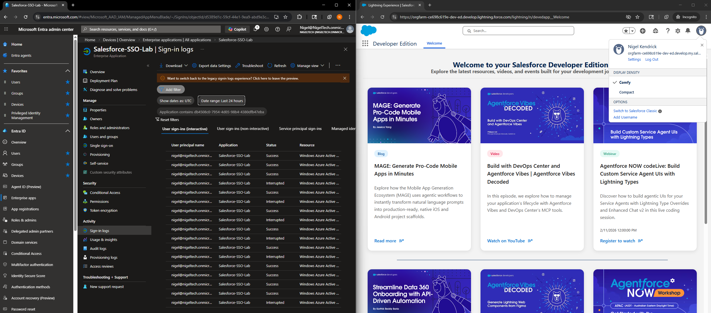
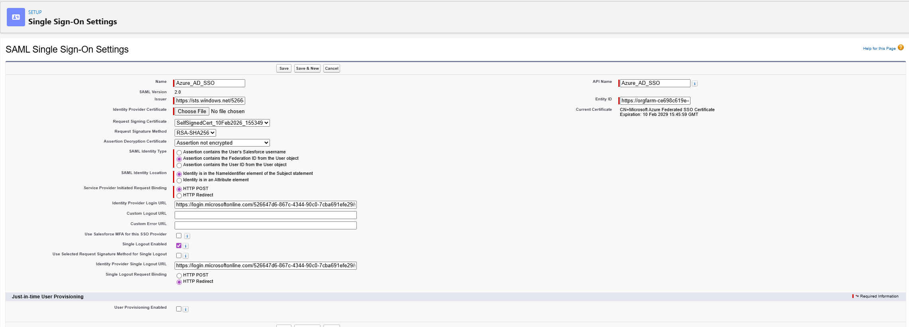
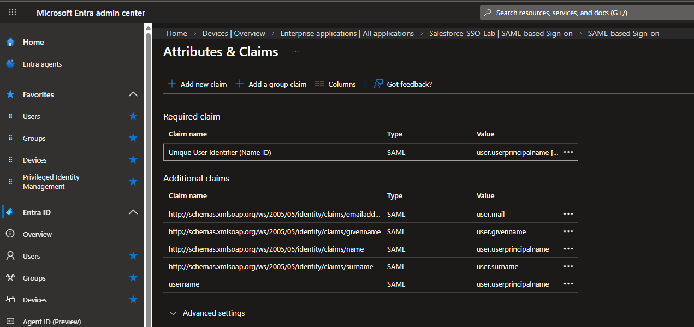

Project Overview
Configured enterprise Single Sign-On (SSO) between Azure AD (Identity Provider) and Salesforce Developer Edition (Service Provider) using the SAML 2.0 protocol. This implementation demonstrates understanding of federated authentication, identity provider integration, claims mapping, and troubleshooting federation issues in production-like environments.
Business Problem
Organizations using multiple cloud applications (Salesforce, Microsoft 365, AWS, etc.) face significant security and user experience challenges when each application requires separate credentials. Users must remember multiple passwords, leading to password reuse, weak passwords, and help desk overhead. SAML-based SSO solves this by centralizing authentication in a single Identity Provider (Azure AD), allowing users to authenticate once and seamlessly access all federated applications. This reduces security risk, improves user experience, and provides centralized audit logging for compliance.
Lab Environment
- Azure Entra ID tenant as Identity Provider (IdP)
- Salesforce Developer Edition as Service Provider (SP)
- Salesforce Domain: orgfarm-ce698c619e-dev-ed.develop.my.salesforce.com
- Test user: Nigel@NigelTech.onmicrosoft.com (synchronized Azure AD account)
- SAML 2.0 protocol for authentication
- Federation Metadata XML for configuration exchange
Implementation Steps
Phase 1: Salesforce Developer Edition Setup
- Created Salesforce Developer Edition account at developer.salesforce.com
- Verified "My Domain" was already configured and deployed:
- Domain: orgfarm-ce698c619e-dev-ed.develop.my.salesforce.com
- My Domain is required for SAML SSO in Salesforce
- Navigated to Setup → Identity → Single Sign-On Settings
- Enabled SAML for the organization
Phase 2: Azure AD Enterprise Application Configuration
- Logged into Azure Portal → Entra ID → Enterprise Applications
- Clicked "+ New application"
- Searched Azure AD Gallery for "Salesforce"
- Selected "Salesforce" template and created application named "Salesforce-SSO-Lab"
- Configured SAML-based Single Sign-On:
- Entity ID (Identifier): https://orgfarm-ce698c619e-dev-ed.develop.my.salesforce.com
- Reply URL (ACS URL): https://orgfarm-ce698c619e-dev-ed.develop.my.salesforce.com
- Sign-on URL: https://orgfarm-ce698c619e-dev-ed.develop.my.salesforce.com
- Configured User Attributes & Claims:
- Name ID (Unique User Identifier): user.userprincipalname (Email format)
- username: user.userprincipalname
- emailaddress: user.mail
- givenname: user.givenname
- surname: user.surname
- name: user.displayname
- Downloaded SAML Signing Certificate (Base64 format)
- Downloaded Federation Metadata XML file
- Assigned test user (Nigel@NigelTech.onmicrosoft.com) to the application
Phase 3: Salesforce Identity Provider Configuration
- In Salesforce Setup → Identity → Single Sign-On Settings → New (SAML)
- Created Identity Provider configuration named "Azure_AD_SSO"
- Clicked "Choose File" and uploaded Federation Metadata XML from Azure AD
- Salesforce automatically populated fields from metadata:
- Issuer: Azure AD tenant identifier
- Entity ID: Salesforce instance URL
- Identity Provider Login URL: Azure AD SAML endpoint
- X.509 Certificate: Azure AD signing certificate
- Configured critical SAML settings:
- SAML Identity Type: Assertion contains the Federation ID from the User object
- SAML Identity Location: Identity is in the NameIdentifier element of the Subject statement
- Service Provider Initiated Request Binding: HTTP POST
- Request Signature Method: RSA-SHA256
- Saved the SAML Identity Provider configuration
Phase 4: Salesforce User Creation and Federation ID Mapping
- Navigated to Setup → Users → New User
- Created user with following details:
- Username: Nigel@NigelTech.onmicrosoft.com (must match Azure AD)
- Email: Matching email address
- Federation ID: Nigel@NigelTech.onmicrosoft.com (critical field - matches SAML NameID)
- User License: Salesforce
- Profile: System Administrator
- Active: Checked
- Verified Federation ID exactly matches the NameID claim sent from Azure AD
Phase 5: My Domain Authentication Service Configuration
- Navigated to Setup → Company Settings → My Domain
- Clicked "Authentication Configuration"
- Selected "Azure_AD_SSO" as an authentication service
- This adds an SSO login button to the Salesforce login page
- Saved authentication configuration
Phase 6: Testing SSO Authentication
- Opened incognito browser window
- Navigated to Salesforce My Domain URL
- Clicked "Azure_AD_SSO" button on login page
- Redirected to Azure AD login (login.microsoftonline.com)
- Entered Azure AD credentials: Nigel@NigelTech.onmicrosoft.com
- Successfully authenticated and redirected back to Salesforce
- Logged into Salesforce without entering Salesforce password
- Verified user profile showed SSO authentication

Left: Azure AD sign-in logs showing successful SSO authentication events. Right: Salesforce Developer Edition successfully accessed via Azure AD SSO - no Salesforce password required

Salesforce SAML Identity Provider settings showing critical Federation ID configuration that enables proper user mapping from Azure AD NameID to Salesforce user
Critical Troubleshooting Case Study
The Problem
- User was active in Salesforce ✓
- Federation ID matched Azure AD NameID ✓
- Case-insensitive matching enabled ✓
- SAML assertion was successfully sent from Azure AD ✓
Root Cause Analysis
Initial Configuration (INCORRECT):
- SAML Identity Type: "Assertion contains the User ID from the User object"
Why This Failed:
- Salesforce User ID: 18-character internal identifier (e.g., 005xx000001X8Uz)
- Azure AD NameID: Email format (Nigel@NigelTech.onmicrosoft.com)
- Result: Salesforce tried to match email-formatted NameID against 18-character User ID → no match found → SSO failed
❌ Incorrect Configuration
SAML Identity Type: User ID
Salesforce expects: 005xx000001X8Uz
Azure AD sends: Nigel@NigelTech.onmicrosoft.com
Result: No match → SSO fails
✅ Correct Configuration
SAML Identity Type: Federation ID
Salesforce expects: Email format
Azure AD sends: Nigel@NigelTech.onmicrosoft.com
Result: Match found → SSO succeeds
The Solution
Changed Configuration To:
- SAML Identity Type: "Assertion contains the Federation ID from the User object"
Why This Works:
- Federation ID field is specifically designed for external Identity Providers
- Accepts email-formatted identifiers from SAML assertions
- Properly maps incoming SAML NameID to Salesforce user record
Result: Immediate SSO success ✅
- User ID: Internal 18-character Salesforce identifier - used only for Salesforce-to-Salesforce federation
- Username: Login username field - not recommended for federation (can change)
- Federation ID: External identity field - designed for IdP integration, accepts email/UPN format ✅
Understanding SAML 2.0 Protocol Flow
Step 1: User Initiates Login (SP-Initiated)
User clicks "Azure_AD_SSO" button on Salesforce login page. Salesforce generates SAML AuthnRequest.
Step 2: Redirect to Identity Provider
Browser redirects to Azure AD with AuthnRequest. User sees Azure AD login page.
Step 3: User Authentication
User enters Azure AD credentials. Azure AD validates username and password. MFA may be required based on Conditional Access policies.
Step 4: SAML Assertion Generation
Azure AD generates SAML assertion containing:
- NameID: Nigel@NigelTech.onmicrosoft.com (user identifier)
- Attributes: username, email, firstname, lastname, displayname
- Audience: Salesforce Entity ID (ensures token only valid for Salesforce)
- NotBefore/NotOnOrAfter: Time-bound validity window
- Digital Signature: RSA-SHA256 signature to prevent tampering
Step 5: SAML Response to Service Provider
Browser POSTs SAML response to Salesforce Assertion Consumer Service (ACS) URL. Salesforce validates:
- Digital signature using Azure AD's public certificate
- Audience restriction matches Salesforce Entity ID
- Token is within time validity window
- NameID matches a user's Federation ID
Step 6: Session Creation
Salesforce creates authenticated session for the user. User is redirected to Salesforce home page - fully logged in without Salesforce password.
Security Features Implemented
Certificate-Based Trust
- Azure AD signs SAML assertions with X.509 certificate
- Salesforce validates signature using Azure AD's public certificate from metadata
- Prevents token forgery and man-in-the-middle attacks
Audience Restriction
- SAML assertion includes Audience element with Salesforce Entity ID
- Salesforce rejects tokens intended for different applications
- Prevents token replay attacks across different SaaS applications
Time-Bound Tokens
- NotBefore and NotOnOrAfter timestamps limit token validity window
- Typical validity: 5-60 minutes
- Prevents indefinite token reuse
Centralized Audit Logging
- All authentication events logged in Azure AD Sign-in Logs
- Provides visibility into who accessed Salesforce and when
- Supports compliance and forensic investigations

Azure AD User Attributes & Claims configuration showing NameID and custom claims sent to Salesforce in SAML assertion
Network-Level SAML Traffic Analysis
Using browser DevTools Network tab, the complete SAML authentication flow can be observed and validated. This demonstrates technical troubleshooting capability and understanding of HTTP-level protocol mechanics.

Browser DevTools Network tab filtered for SAML traffic showing the complete authentication flow: AuthnRequest → SAML assertion → ACS POST → Salesforce frontdoor redirect. 4 SAML-related requests isolated from 365 total requests demonstrate targeted troubleshooting skills.
Key Concepts Learned
SAML vs OAuth vs OIDC
| Protocol | Primary Use Case | Token Format |
|---|---|---|
| SAML 2.0 | Enterprise SSO (Authentication) | XML-based assertions |
| OAuth 2.0 | Delegated Authorization | Access tokens (opaque or JWT) |
| OpenID Connect | Modern SSO (Authentication) | ID tokens (JWT format) |
Identity Provider (IdP) vs Service Provider (SP)
- Identity Provider (Azure AD): Authenticates users, issues SAML assertions with claims
- Service Provider (Salesforce): Consumes SAML assertions, grants access based on validated identity
Claims and Attributes
- Claims: Statements about a user (name, email, role, department)
- NameID: Primary user identifier - most critical claim for user matching
- Custom Claims: Can add any Azure AD attribute (employeeID, manager, office location)
Skills Demonstrated
Technical Implementation
- Configuring SAML 2.0 federation between IdP and SP
- Understanding and mapping SAML claims/attributes
- Using Federation Metadata XML for configuration exchange
- Implementing certificate-based trust relationships
- Configuring Service Provider-initiated SSO flow
Troubleshooting and Problem-Solving
- Diagnosing SSO failures using error messages and logs
- Understanding the difference between Salesforce identity fields (User ID vs Federation ID)
- Analyzing SAML assertions to verify claim values
- Using Azure AD sign-in logs to validate successful authentication
- Methodical testing approach: isolate variables, test incrementally
Security Concepts
- Certificate-based authentication and digital signatures
- Audience restriction and token scope limiting
- Time-bound token validity (NotBefore/NotOnOrAfter)
- Understanding authentication (who you are) vs authorization (what you can do)
- Centralized identity governance and audit logging
Tools and Resources Used
- Azure Portal: Entra ID enterprise application configuration and sign-in logs
- Salesforce Setup: Identity provider configuration and user management
- Browser DevTools: Network tab analysis for SAML traffic inspection
- SAML Tracer (browser extension): Decoding and analyzing SAML assertions
- Federation Metadata XML: Automated configuration exchange between IdP and SP
Conclusion
This lab demonstrates end-to-end implementation of enterprise Single Sign-On using industry-standard SAML 2.0 protocol. The troubleshooting experience highlights the critical importance of understanding identity field mapping in federated authentication scenarios. This knowledge directly applies to IAM analyst roles where configuring and troubleshooting SSO integrations is a core responsibility.
Key success factors: Understanding protocol flows, methodical troubleshooting, and recognizing that Federation ID (not User ID or Username) is the correct field for external identity provider integration in Salesforce.